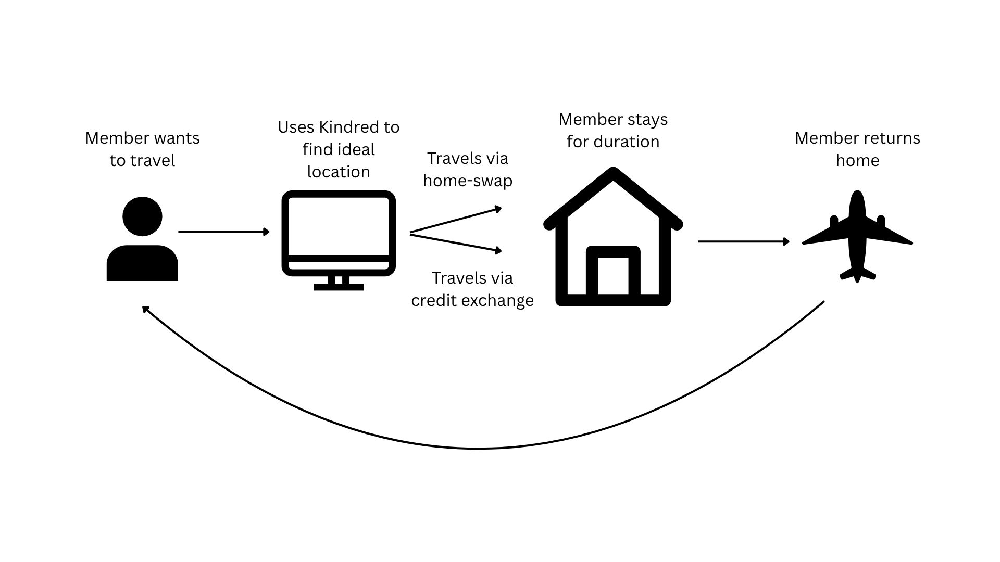
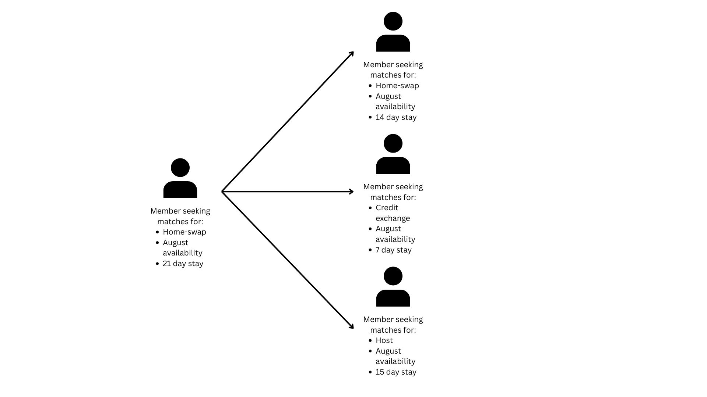

[(33, 0.22612141893132756),
(8, 0.12977247904917524),
(72, 0.12976891406493157),
(32, 0.09479958388340516),
(60, 0.08957313358870844),
(14, 0.05765653850182544),
(18, 0.05343156854054164),
(76, 0.04911126057985683),
(17, 0.03461826470415198),
(97, 0.008722850515238703)]Abstract
In this post, we introduce Kindred, a new way to travel [1]. We first espouse the company mission, vision, and values through the lens of business strategy. We continue this discussion by moving into the more technical details of how the platform operates via market design. This market design is then used to illustrate a prototype dispatch algorithm that Kindred could use to implement their strategies. We conclude by discussing potential next steps for the company.
History and Strategy
Kindred was founded by Tasneem Amina and Justine Palefsky in 2021. Their paths crossed early in their careers through a mutual mentor [1], and they soon decided to team up to make travel more “human” again. Today, Kindred has a network of over 170,000 members in more than 100 cities worldwide. While platforms like Airbnb and Vrbo encourage people to buy up properties to rent [2], Kindred shows there can be more trust and human connection in meaningful travel.
Kindred differentiates itself in the travel-lodging market by establishing itself as a home-swap platform. To travel on Kindred, members follow this process:
- Sign up to become a member (each application goes through a vetting process).
- Browse and select a home you’d like to visit.
- Send a request with your proposed dates for either a home swap or a credit swap.
- Once approved, cleaning services are arranged for both homes (if performing a home swap) before guests arrive and after guests leave. Guests pay for these cleaning services and a platform fee.
The Kindred network is where the magic happens. Every Kindred user is also a host, sharing their home with other members. In fact, over 90% of Kindred listings are primary residences, fostering a trusting network. In exchange for hosting, members gain access to homes all over the world. Because each member is a host and travel is facilitated through home-swapping, Kindred members only pay for cleaning and platform fees, resulting in significantly lower travel costs. For example, a one-bedroom apartment in London might cost a Kindred member approximately $315 dollars, compared to $655 for a similar listing on Airbnb.
Kindred members can also travel via credit exchange. Members accrue credits by hosting other members (one night hosted equals one credit). Instead of a direct home swap, members can use these accumulated credits to travel to another Kindred home through the platform. Members still pay for the cleaning and platform fee.
In short, Kindred positions itself as an exclusive, vetted network that relies on the trust of members via home-swapping to drive down costs in order to provide meaningful, more “human” travel experiences.
Market Design
Market design is a multidisciplinary field within economics that deals with the rules of participation in marketplaces [3]. A common example involves auction markets for online ads, where advertisers compete for ad locations on platforms like Facebook to get reader exposure. While we’ve discussed Kindred’s high-level strategy, we’ll now formally address the market design underpinning that strategy to define our platform’s rules.
The first step in market design is defining the objective – what we are trying to optimize. For Kindred, this could be the number of nights booked or the amount of money saved using the platform. However, according to Kindred’s strategy (and their website), their core objective is for people to “feel at home.” While this is a challenging goal to quantify, a reasonable proxy would be the number of home-swaps per member. A high number here would reflect members’ comfort and ease in traveling within the network, suggesting they truly feel at home. To ensure this consistent “at home” experience, Kindred vets each member application. While this rule may result in fewer network members, we prioritize optimizing for the “home feel,” anticipating it will encourage more home-swaps.
Rule #1: Host to Travel
Now that the objective is established and a rule defined for adding members to the market, we can outline the rules for players within that market.
First, to travel on Kindred, members must be willing to either host other members via a home swap or exchange accumulated credits for stays. This means a traveling member can contribute both demand and supply to the market (via home swap) or just demand (via credits).
However, to travel using credits, a member must have hosted at least the equivalent number of nights they wish to stay at their destination. Crucially, credits cannot be purchased or exchanged between members; they are granted by the platform as a reward for active participation in the network.
These rules establish the market’s fundamental supply and demand mechanics. While credits offer deferred reciprocity, allowing members to leverage past hosting efforts for future travel and significantly reducing friction, they introduce a tradeoff: we aren’t guaranteed a unit of supply for every unit of demand as we would be in a pure barter system. Nonetheless, since our goal is to ensure guests feel at home by minimizing travel friction, the credit system, alongside the barter system, reduces barriers to travel while still incentivizing members to host in order to travel.
Rule #2: Guest Control
The second rule within our market ensures members retain 100% control over who stays in their home. Even though the network is vetted upon application, members still have the power to approve or deny requests for home swaps or credit stays. This rule is specifically designed to promote supply. By giving members the final say on guests, they’re more likely to feel comfortable and willing to list their homes.
While members have the power to approve or deny requests, they are still motivated to host guests due to rule #1. The more guests a member hosts, the more credits they earn and the more they can travel without a perfect house-swap match.
The tradeoff with this rule is increased matching complexity. While we can facilitate matches between members seeking similar location swaps, the ultimate power of approval rests with the members. Therefore, our matching service must provide each member with relevant information to guide their decision-making.
Rule #3: Cost Allocation
The final rule we cover addresses how costs are allocated within the network. Costs are determined by the two travel propositions: a direct home swap with another member or using accrued credits to stay at a Kindred member residence. For a direct home swap, each member involved pays the cleaning fees for the location they are staying at (both before and after their visit), as well as a platform fee. In the credit exchange scenario, members must pay one credit per night of their stay, in addition to the cleaning and platform fees.
This rule further incentivizes members to host, as they don’t have to worry about the hassle of pre- or post-guest cleaning. Furthermore, members can expect the same seamless experience when traveling, knowing their destination will be cleaned before and after their stay. Lastly, this rule provides a transparent fee structure, ensuring members understand the costs associated with both travel options on the network.
Key Assumptions
The rules of our marketplace are implemented with key assumptions in mind. These are enumerated below.
- Kindred members desire to increase their travel by entering a network with clear expectations.
- Kindred members share their true travel preferences.
- Kindred members want to retain control over who stays at their residence.
- Members will increase their trust in the platform with continued use.
In short, the assumptions state that we designed the market to work for members who operate under these assumptions. For example, we don’t expect someone to search for home-swap opportunities in NYC if they truly don’t want to go to NYC. Essentially, we expect those who want to use Kindred will desire to use the platform to maximize their travel utility within the parameters we set in this market.
Matching
Our marketplace now has established rules that provide guidance on the services we create to reduce friction for our users and encourage activity for them. One key component among all of our rules is the importance of matching. Members want to find the right property during the right time frame with the right people (for either a swap or a credit stay approval). This user journey is illustrated in Figure 4.1.

Matching addresses the second step and associated transition in Figure 4.1. We need a process that reduces friction for users, helping them find ideal locations that align with their preferences and have a high probability of acceptance. This highlights the importance of our market design and underlying assumptions. The market is designed to encourage true preference revelation among members. If our assumption holds true that members will follow this design, we can implement systems that effectively help them find what they’re looking for. To enhance this process, we’ve magnified step two from Figure 4.1 in Figure 4.2 to illustrate potential system design.

As we can see in Figure 4.2, each member in the network has their own preferences they are trying to align with other members. Realistically speaking, with the current size of the Kindred network, it would be quite difficult to find someone with your exact preferences. The current process of finding potential matches is enumerated below.
- Member logs onto Kindred
- Uses the browse option to find locations according to their preferences
- Sends requests to locations they are interested in and waits for response
- If request is approved, preparations are arranged through the platform
While the above process is intuitive and useful for users, we can enhance this by providing algorithms that reduce the friction of finding potential matches.
Algorithmic Matching via Gale-Shapley
The process of finding matches within our market design can be greatly enhanced via game theory [4]. In our network, we have agents whom we assume are rational and possess weighted preferences. They strategically share this information on the platform to find their ideal matches. Once they find a suitable match, they move forward with their travel plans. This dynamic is precisely what game theory studies.
In our network, as illustrated in Figure 4.2, we can encounter overlapping scenarios. For instance, a user desiring a 21-day stay might match with one member hosting for 15 days and another for 6. Simultaneously, they might be willing to host two members themselves during that period – one for 14 days and another for 7. This type of overlap is characteristic of two-sided matching markets [5]. The algorithm commonly used to address such problems is known as the Gale-Shapley algorithm [5].
The Gale-Shapley algorithm is used to find stable matches among agents. This means finding matches that sufficiently address their needs, to the point where they wouldn’t gain additional utility by seeking a different match. While this algorithm is primarily applied in scenarios with distinct sets of proposers and receivers, we can extend it to our situation where agents act as both proposers and receivers.
Matching Algorithm Design
Our matching algorithm combines principles from Gale-Shapley, DoorDash’s dispatch algorithm [6], and Airbnb’s listing recommendation algorithm [7]. The algorithm is enumerated below.
- User inputs their current travel preferences
- Our matching algorithm calculates the closest matches and ranks them accordingly
- The scores from these listings are extracted and used in a weighted sum
- Weighted sum is calculated using other business priority logic (response wait time, probability of acceptance, user rating, etc)
- The listings are then shown in the order of the weighted sum in descending order (i.e. highest score is best)
Calculating Similarity
The first step in the algorithm is to calculate similarity scores between a user’s search criteria and our set of listings. For simplicity in this prototype, let’s assume a user can only search or request listings based on: location, duration, and number of bedrooms. We need to identify which listings in our dataset best correspond with the user’s search. Let \(L\) represent the set of all listings in our Kindred network. The initial step for calculating similarity involves filtering \(L\) to create a subset containing only listings within the specified location. (Note: We assume all listings are properly geotagged, accurately representing their respective cities.)
The second step is to calculate the similarity in date availability. To do this, we can use the Jaccard Similarity [8] measure to get the similarity between date ranges. This is illustrated in Equation 5.1.
\[ J(A, B) = \frac{|A \cap B|}{|A \cup B|} \tag{5.1}\]
The numerator represents the intersection of our date overlap—that is, the number of days our date ranges coincide. The denominator is the union of our date ranges, covering the period from the earliest start date to the latest end date. A perfect match would yield a similarity score of 1, while any less-than-perfect match would naturally result in a lower score.
The last step is to calculate the similarity in number of bedrooms. A simple measure for this would be absolute difference, as shown in Equation 5.2.
\[ S(A, B) = 1 - \frac{|A - B|}{max - min} \tag{5.2}\]
Equation 5.2 measures the difference between a perfect match (1) and the absolute difference between our search request and a listing’s offering, all normalized by a maximum range.
Our three similarity scores are then combined into a weighted sum function to calculate an overall similarity score. This is shown in Equation 5.3.
\[ \text{Total Similarity Score} = w^{T}X \tag{5.3}\]
\(X\) is our search criteria vector and \(w^{T}\) is our weight vector. This weight vector corresponds to the priority we place on the search criteria. For example, in our criteria, \(w^{T}\) might be \([.7, .3]\). This would mean that we put the most weight on our date overlap similarity score, followed by number of bedroom similarity. These scores are then ranked in descending order.
Weighting Other Factors
After calculating listing similarities, we also need to incorporate other metrics that enhance the user’s finding experience. For this prototype, we focus on three key metrics: queue length (the number of requests for a current listing within a given date range), host time to response, and listing rating. We prioritize these metrics to address supply-demand balance (ensuring listings get booked), connect users with responsive hosts, and pair them with listings that have provided positive experiences in the past. This provides an overall listing score shown in Equation 5.4.
\[ \text{Listing Score} = w^{T}X \tag{5.4}\]
Just as in Equation 5.3, we use a weighted sum in Equation 5.4 to calculate the listing score. This listing score incorporates both the similarity score from Equation 5.3 and the other core experience metrics we explained earlier in this section. Once all listing scores are calculated, we rank these in descending order and present them to the user.
Connection to Market Design
Overall, while our algorithm is a simple prototype, it captures the essence of how we designed our market. It encourages users to accurately share their preferences (such as location and travel dates) while simultaneously encouraging hosts to do the same. Through this mutual information sharing, we rank a searcher’s preferences against those of hosts. We then return the top option for a searcher, along with a list of other ranked choices. Using these core principles, we can eventually extend this algorithm to become much more sophisticated and capable of handling matching at scale for a platform like Kindred.
Demonstration
In this section, we demonstrate a simple example of the algorithm in practice. We take the perspective of a guest looking for a match with the following information.
- City ID: 3
- Date Range: (2024-07-04, 2024-07-12)
- Number of Bedrooms: 1
Our simulation compares these preferences against one hundred listings in the network. The algorithm first filters the dataset to include only cities corresponding to the user’s preference. It then proceeds to find the similarity between the date range and the number of bedrooms. The weights for these scores in the initial similarity calculation are \([.7, .3]\) respectively.
After calculating the similarity score, we compute a listing score using queue length, response time, and rating. These individual scores, along with the initial similarity score, are normalized within their respective ranges to ensure equal scaling. The weights for the combined listing score are \([.4, .3, .2, .1]\) respectively, reflecting the priority given to similarity score, queue length, response time, and rating.
Below is the output for the top ten listings for our guest.
The highest-ranked listing stands far above the rest, followed by what is essentially a tie between the second and third. The remaining listings quickly fall off, trending toward zero. Below is the information about the highest-ranked listing.
City ID: 3
Date Range: (datetime.date(2024, 7, 3), datetime.date(2024, 7, 10))
Number of Bedrooms: 3
Number of Requests: 0.3410663510502585
Response Time: 0.11347352124058907
Rating: 0.9246936182785628The algorithm fairly well captured a listing that significantly overlaps with the guest’s desired date range. While the number of bedrooms is questionable, it’s an acceptable outcome for now, given the algorithm’s heavy weighting towards date range overlap.
The number of requests, response time, and rating are all normalized values, yet still offer clear insights. The low number of requests indicates this listing isn’t heavily in demand. The response time suggests the host is very prompt, which our prototype algorithm aims to encourage. Finally, the favorable rating is another positive for the guest, appearing to be on the higher end of the spectrum. We also present the second best listing below.
City ID: 3
Date Range: (datetime.date(2024, 7, 4), datetime.date(2024, 7, 11))
Number of Bedrooms: 4
Number of Requests: 0.18223608778806233
Response Time: 0.7553614103176525
Rating: 0.4251558744912447The date range of this second listing appears to be slightly more aligned with the user’s preferences, but the algorithm favored the first due to the greater discrepancy in bedrooms. This is a valuable insight for future hyperparameter tuning. Furthermore, while the requests are lower, the response time is much higher, and the listing has a significantly lower rating. We can attribute the even lower score of this listing to the weighting priorities in the listing score metric.
Conclusion
This post examined the company Kindred through the lens of business strategy, economics, and algorithm development. We demonstrated how Kindred provides a unique value proposition to the travel-lodging market. We then proceeded to engineer the market through careful market design, encouraging active involvement in the network. We concluded by presenting a high-level prototype of how an algorithm can be designed and implemented to optimize our market design.
We hope this post not only demonstrated the power of the intersection between strategy, economics, and algorithms, but also introduced you to an innovative new company that’s poised to help travelers feel they have a home anywhere they go.
References
[1]
G. Hamadey, “Kindred house swapping: How it all began,” Kindred Blog, 2025, Accessed: Jul. 18, 2025. [Online]. Available: https://blog.livekindred.com/kindred-house-swapping-how-it-all-began/?lng=en
[2]
D. Proserpio and xxx xxx, “The effect of home-sharing on house prices and rents: Evidence from airbnb,” Wharton Marketing Department Working Paper, 2019, Accessed: Jul. 18, 2025. [Online]. Available: https://marketing.wharton.upenn.edu/wp-content/uploads/2019/08/09.05.2019-Proserpio-Davide-Paper.pdf
[3]
S. Athey, “Economics 980: Topics in market design.” Accessed: Jul. 18, 2025. [Online]. Available: https://gsb-faculty.stanford.edu/susan-athey/economics-980-topics-market-design/
[4]
J. Von Neumann and O. Morgenstern, Theory of games and economic behavior. Princeton, NJ: Princeton University Press, 1944.
[5]
D. Gale and L. S. Shapley, “College admissions and the stability of marriage,” The American Mathematical Monthly, vol. 69, no. 1, pp. 9–15, 1962.
[6]
Holly Jin, “Next-Generation Optimization for Dasher Dispatch at DoorDash,” DoorDash Engineering Blog, 2020.
[7]
M. Grbovic, H. Cheng, Q. Zhang, L. Yang, P. Siclait, and M. Jones, “Listing embeddings in search ranking,” The Airbnb Tech Blog, Mar. 2018, Available: https://medium.com/airbnb-engineering/listing-embeddings-for-similar-listing-recommendations-and-real-time-personalization-in-search-601172f7603e
[8]
P. Jaccard, “Distribution de la flore alpine dans le bassin des dranses et dans quelques régions voisines,” Bulletin de la Société Vaudoise des Sciences Naturelles, vol. 37, pp. 241–272, 1901.